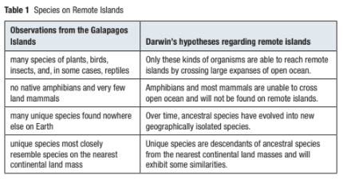
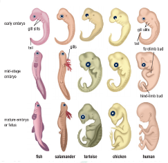
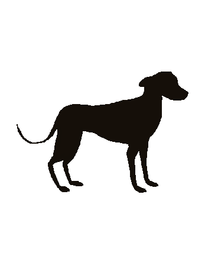
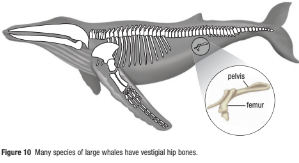

The Evidence of Evolution
Darwin’s Hypothesis
Callout


Table 1 lists some key observations regarding the species inhabiting the Galapagos Islands. Each observation is matched with Darwin’s corresponding hypothesis for all remote islands, based on the theory that species evolve.

Testing Darwin’s Hypotheses
Callout
In this case, the Hawaiian Islands provide an excellent test case of Darwin’s hypotheses.
Like the Galapagos, the Hawaiian Islands were formed from volcanoes that rose directly from the ocean floor.

An examination of the native species of Hawaii supports Darwin’s hypotheses.
There are no native amphibians or mammals, with the exception of bats and sea lions.
There are many species of unique plants, birds, and insects.


The impacts have been particularly damaging in Hawaii, where an estimated 271 species have become extinct since the arrival of Europeans in 1778. The black mamo (Drepanis funerea), for example, a species of honeycreeper, became extinct in about 1907.


Homologous and Analogous Features
Callout

Homologous feature is a structure with a common evolutionary origin that may serve different functions in modern species (for example, bat wing and human arm).


All mammals have an almost identical number and arrangement of bones. (a) This tiny bat skeleton is very similar in many respects to that of (b) a human.
Although Darwin had no understanding of chromosomes and genes, he knew that many traits were inherited from generation to generation.

Closely related species share homologous developmental processes and patterns as well. In early developmental stages, the embryos of all vertebrates, including humans, chickens, and fish, possess a short bony tail.

Analogous feature is a structure that performs the same function as another but is not similar in origin or anatomical structure; for example, bird and insect wings.

Vestigial Features and Anatomical Oddities
Callout

Vestigial feature is a rudimentary and non-functioning, or only marginally functioning, structure that is homologous to a fully functioning structure in closely related species.
(a) Dogs have a vestigial toe, or “dew claw,” on each front limb. The toe serves no useful function.
(b) Pigs have two well-developed toes and two vestigial toes that hang behind them.
(c) Horses have one greatly enlarged toe. The others are vestigial or missing entirely. Vestigial toes are shown in purple.
Competition within Populations
Callout
In Essay on the Principle of Population, written by the Reverend Thomas Malthus, he showed that all populations were limited in size by their environment—and in particular their food supply.

Competition between individuals of the same species is intense because they are vying for the same resources.
Assessing the Evidence
Callout
- Many other scientists, including Linnaeus, Lamarck, and Darwin’s own grandfather, believed species were not immutable.
- Darwin believed not only that species had evolved, but also that his theory could explain how they evolved.
- In the next section you will learn the circumstances leading to Darwin’s publication of On the Origin of Species and be introduced to his famous and elegant theory.